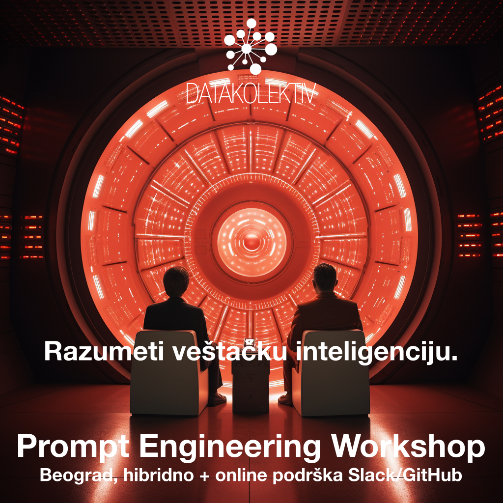

AI Training - Prompt Engineering Workshop
Beograd, hibridno online/uživo
Online Slack/GitHub podrška 7 dana
>> Prijavite se na: hello@datakolektiv.com <<

>> Prijavite se na: hello@datakolektiv.com <<
Cena 350€
NOVO: Radionica je sada proširena na četiri (4) sesije od po 3h i uključuje kompletnu studiju projekta aplikacije ili servisa koji se oslanja na generativnu AI - ispunili smo ovime zahteve ljudi sa non-tech background koji upravljaju timovima ili rade na product strani.
Zašto treba da učimo o Prompt Engineering?
U The state of AI in 2023: Generative AI’s breakout year (avgust 2023) istraživanju, McKinsey & Company navode: “… mnogo manji deo ispitanika prijavljuje zapošljavanje softverskih inženjera povezan sa AI - ulogu koja je bila najčešće zapošljavana prošle godine - nego u prethodnoj anketi (28% u najnovijoj anketi, smanjenje sa 39%). Uloge u prompt inženjeringu su se nedavno pojavile, jer potreba za tim skupom veština raste zajedno sa usvajanjem generativne AI, sa 7% ispitanika iz organizacija koje su usvojile AI koji prijavljuju takva zapošljavanja u protekloj godini.”
Zato što će Prompt Engineering pozicija u budućnosti biti sve više kako kompanije usvajaju generativne AI tehnologije - a usvajaju ih naveliko!
Zato vam što sistematsko razumevanje i praksa u upotrebi generativnih AI tehnologija (poput OpenAI (Chat)GPT - ali ne samo nje) omogućavaju da ozbiljno uštedite vreme koje trošite u poslu.
Zato što ćete razumevanjem i praksom rada sa ovom tehnologijom steći dobar profesionalni status u ma kojoj industriji jer očigledno nema budućnosti rada bez asistivnih, generativnih AI.
Zato što će nastati čitave nove kategorije profesija u kojima će ljudi koji suštinski nisu developeri niti softverski inženjeri raditi poslove koji će suštinski biti veoma slični tome - ali kroz prompt inženjering. Ono što je sada jedna profesija - Prompt Engineer - će uskoro biti mnogo različitih profesija koje će sve podrazumevati prompt inženjering kao osnovnu veštinu!
Zato što su sada aktualni OpenAI GPT-3.5 (besplatni ChatGPT model) i GPT-4, a već se nestrpljivo čeka da u decembru 2023 krene i GPT-5 – tako da je vreme za učenje sada.
Kako radimo na ovoj radionici?
- Vidimo se u online na četiri (4) sesije u trajanju 2.5h - 3h;
- posle toga nastavljamo asinhrono, online, na platformi Slack gde će biti formiran poseban DataKolektiv kanal za ovu radionicu, i gde narednih nedelju dana imate poptuno besplatnu, real-time podršku za sva pitanja koja ćete imati ili use-cases koje testirate;
- biće podeljeni detaljni materijali za učenje i dalji razvoj u Prompt Engineering;
- ko se opredeli i da malo programira u Python sa nama, dobija tri elaborirana Notebook za učenje automatizacije Prompt Engineering kroz OpenAI GPT klasu modela.
Šta ćemo da radimo na Prompt Engineering radionici?
Da li moram ovo da razumem da bih baratao GPT modelima?

Ne. U 1/4 našeg rada na radionici daćemo konceptualni pregled principa na kojima svi generativni modeli za prirodni jezik počivaju; ni minimalno poznavanje matematike neće biti zahtevano (ali ćemo zainteresovane uputiti na to kojim putem se ovakve stvari uče).
Razumevanje samih principa je, ipak, veoma važno: ono nam omogućava da razumemo granice ovakvih tehnologija, da znamo šta, kako i zašto možemo da od njih tražimo, zašto “haluciniraju” i šta su to uopšte “halucinacije”, šta su to “emergentne osobine” ovakvih sistema, i drugo - šta od ovakvih tehnologija da očekujemo, a šta ne.
U 2/4 našeg rada potpuno se fokusiramo na najnovija saznanja veštinu Prompt Engineering-a:
- Kako se, u celini, dizajnira dobar prompt?
- Koji su konstituenti svakog dobrog prompta?
- Koji sve tipovi promptova postoje?
- Kada treba koristiti koji tip prompta:
- Zero-shot prompting
- One-shot i few-shot prompting
- Chain-of-thought prompting (CoT)
- ReAct Prompting
- Coding prompts
- Analytical prompts: kako da GPT model postane vaš analitičar
- Osnove sajberbezbednosti u Prompt Engineering: šta ne treba raditi

Šta su halucinacije u generativnim AI modelima, zbog čega nastaju, i kako možemo da ih kontrolišemo?
U 3/4 rada nastavljamo sa razumevanjem i uvežbavanjem Prompt Engineering po proučenim tehnikama, ali i pružamo uvid u kompletan spektar OpenAI GPT modela:
- Koji sve modeli postoje?
- Čemu koji OpenAI GPT model služi? Koji zadatak treba spefično rešavati kojim modelom, i kako?
- Koji su načini pristupa ovim modelima, i po kojima cenama? Kako proceniti koštanje tačno kojeg zahteva? Šta su tokeni i kako GPT modeli tokenizuju naše promptove?
- Neposredni primeri: promptovi, tokenizacija (objasnićemo šta je to), i cene.
U 4/4 rada (opciono; za slušaoce koje privlači Python programiranje, mada mi savetujemo svima da uzmu učešća i u ovom delu radionice) prelazimo na rad sa OpenAI API kroz programski jezik Python:
- minimalno poznavanje Python za automatizaciju Prompt Engineering kroz OpenAI API;
- OpenAI API end-points, tokenizacija, cene, moderation end-point (veoma važno za razvoj 3rd party apps);
- automatski Prompt Engineering kroz Python;
- prihvatanje rezultata u JSON, XML, CSV formatima;
- fine-tune GPT modela za klasifikaciju teksta;
- rad sa embeddings iz OpenAI modela;
- pregled resursa za dalje učenje;
- pregled kompletne arhitekture za razvoj AI apps i servisa (LangChain, Prompt Engineering, Vector Databases).
[!!!]Ograničen broj polaznika i personalizacija
DataKolektiv nikada ne radi sa velikim brojem polaznika, zato što tokom učešća na našim radionicama i kursevima personalizujemo rad prema vašim potrebama! To garantuje da ćete sa nama provesti dovoljno vremena u radu i moći da diskutujete uživo i online baš sva pitanja koja budete imali, razmenite ideje sa nama - i čak kodirate zajedno sa nama ukoliko želite u pair-programming sesijama. Po završteku radionice mi ćemo vam stajati na raspolaganju za besplatne online konsultacije narednih 7 dana, za sva pitanja koja ćete imati ili use-cases koje biste želeli da testirate. DataKolektiv radi već godinama po ovoj metodologiji i to nam omogućava da se svakom polazniku posvetimo maksimalno i precizno u skladu sa njegovim potrebama!
Predavač

Dr Goran S. Milovanović. Studirao matematiku, filozofiju, i psihologiju, na Beogradskom i Njujorškom (NYU) univerzitetu, doktorirao psihologiju. Programer od svoje desete godine, objavio prvi naučni rad sa dvadeset godina, sarađivao sa vrhunskim kognitivnim naučnicima i objavljivao radove citirane u Stevens’ Handbook of Experimental Psychology. Višegodišnje iskustvo u analitici i mašinskom učenju na nekim od najvećih sistema podataka u svetu (Wikidata), član programskih odbora evropskih konferencija u Data Science. Kao individualni konsultant, u saradnji sa američkim edu startups, i sa DataKolektiv obrazovao je desetine ljudi za rad u Data Science i ML. Osim što vodi DataKolektiv, on je Lead Data Scientist u Smartocto gde vodi LABS tim i razvija sve ML i AI projekte u ovom holandsko-srpskom startapu.
Šta nosimo kući?
Biće podeljeni kompletni materijali sa radionice, uključujući:
- Uvod u generativnu AI (slide-deck)
- Konceptualni pregled arhitekture GPT modela (slide-deck)
- Pregled svih postojećih OpenAI GPT modela, objašnjenja njihove primene (HTML Notebook)
- Detaljan Prompt Engineering trening (praktično sve što se o Prompt Engineering danas uopšte zna, HTML Notebook)
- Kompletan pregled postojećih online resursa za bolji Prompt Engineering, od uvodnih do ekspertskih materijala (HTML Notebook)
- Kompletne Reading i Video liste za dalji rad i učenje (HTML Notebook)
- Kompletna tri Notebook u Python za obuku u radu sa OpenAI API (Jupyter Notebook)
Cena
Cena je samo 350€ u dinarskoj protivvrednosti, a postoji popust od 10% za grupe polaznika (dve i više prijave već čine grupu polaznika; napomenite u vašim prijavama da se prijavljujete kao grupa).
Prijava
>> Prijavite se na: hello@datakolektiv.com <<


Impressum
Goran Milovanovic PR Data Kolektiv, Breza 4/7, ČUKARICA-BEOGRAD
11000 Beograd, Republika Srbija, ID(APR):64498339, TIN:109890695